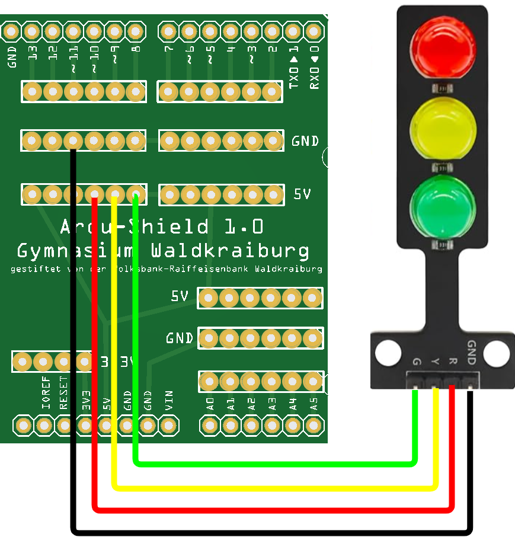
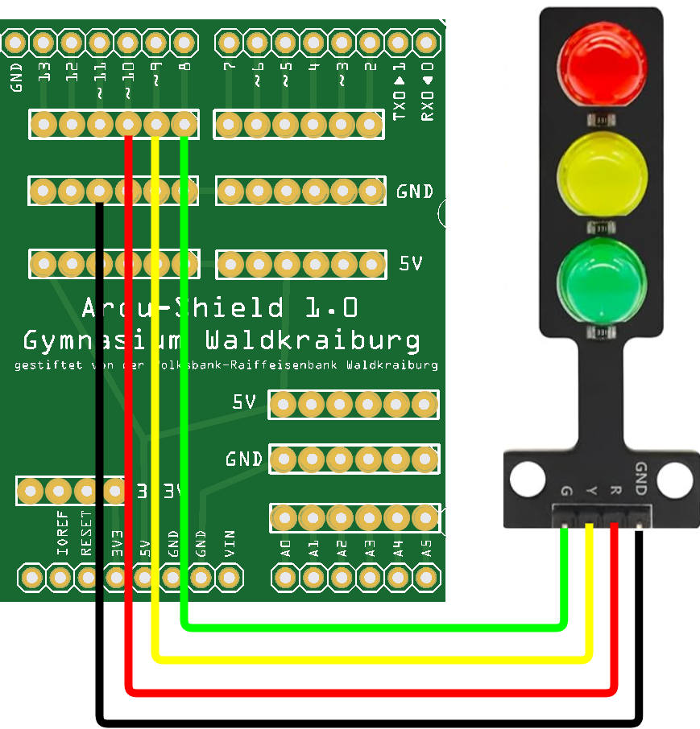

Um die Lampen einzeln schalten zu können, müssen wir sie den Pins am ArduShield verbinden, die wird über den Arduino schalten können.
Diese Pins (2-13 und A0-A5) werden auch aus GPIO-Pins (General Purpose Input Output Pins) bezeichnet:

Auf der Internetseite https://sensebox.github.io/blockly/ steht ein Editor zur blockbasierten Programmierung des Arduino Unos zur Verfügung.
Ändere den Code so ab, dass nur die gelbe LED leuchtet.